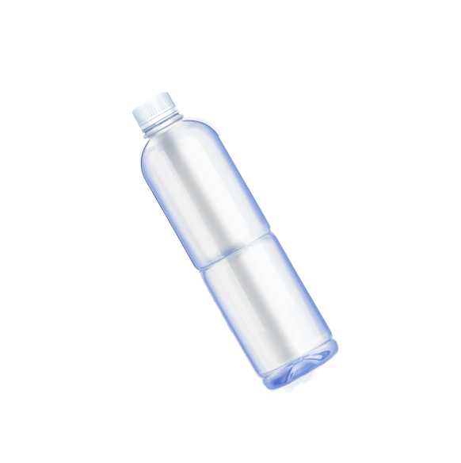

ПЛАСТИК
это не просто мусор, выброшенный в океан
От
5 до 9 млн тонн
пластика
оказывается каждый год
в Мировом океане
Общее количество
пластика,
загрязняющего океан,
оценивается в
На севере Тихого океана между расположен самый
большой мусорный остров, так называемое
Большое Тихоокеанское Мусорное Пятно.
Сегодня его площадь составляет около
1600 тысяч км²
(две территории Франции)

На полное разложение
1 пластиковой бутылки
требуется
500 лет
1 пластиковой бутылки
требуется
500 лет
Помоги природе
—
сдай пластик
—
сдай пластик
Узнай, где это можно сделать в твоём регионе: